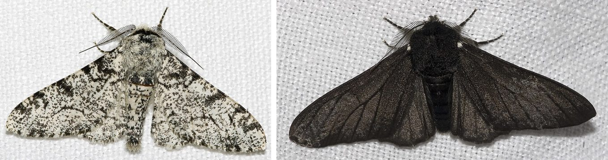

- die Grundschritte der natürlichen Selektion erklären,
- den Giraffenhals nach Darwin erklären und mit Lamarck vergleichen,
- am Birkenspanner erklären, wie eine Änderung der Umwelt die Färbung einer Population verändert,
- Darwins und Lamarcks Erklärung sicher unterscheiden.
Lamarck konnte nicht überzeugend erklären, wie sich Arten verändern. Genau diese Lücke schließt Darwin – mit einer Idee, die ohne Anstrengung, ohne Plan und ohne Ziel auskommt.
1. Darwin und Wallace
Charles Darwin (1809–1882) reiste von 1831 bis 1836 mit dem Forschungsschiff Beagle um die Welt und sammelte dabei Tiere, Pflanzen und Fossilien. Danach arbeitete er über zwanzig Jahre an seiner Theorie – einen ersten Entwurf schrieb er schon 1842.
1858 schickte ihm der Naturforscher Alfred Russel Wallace einen Aufsatz mit fast derselben Idee. Beide Texte wurden 1858 gemeinsam in London vorgestellt. Am 24. November 1859 erschien Darwins Buch On the Origin of Species („Über die Entstehung der Arten“).
2. Das Prinzip der natürlichen Selektion
Darwins Erklärung lässt sich in vier Schritten zusammenfassen:
- Überproduktion: Lebewesen bekommen mehr Nachkommen, als überleben können.
- Variation: Die Individuen einer Art unterscheiden sich – etwas größer, etwas schneller, etwas anders gefärbt.
- Vererbung: Viele dieser Unterschiede werden an die Nachkommen weitergegeben.
- Selektion (Auslese): Wer zufällig Merkmale hat, die in seiner Umwelt nützlich sind, überlebt eher und hat mehr Nachkommen. Diese Merkmale werden in der Population dadurch häufiger.
Wiederholt sich das über sehr viele Generationen, verändert sich die Art. Darwin nannte das natürliche Selektion – die Umwelt „wählt aus“, ganz ähnlich wie ein Züchter, der nur seine besten Tiere weiterzüchtet. Nur gibt es in der Natur keinen Züchter.
„Das einzelne Tier passt sich an.“ – Nein. Ein einzelnes Tier behält seine Merkmale sein Leben lang. Was sich verändert, ist die Population: Von Generation zu Generation gibt es mehr Tiere mit dem nützlichen Merkmal.
1 · Der Giraffenhals nach Darwin
7 minErkläre den langen Giraffenhals mit Darwins vier Schritten. Vergleiche dann in einem Satz mit Lamarcks Erklärung aus Modul G1.
- Ich habe alle vier Schritte verwendet.
- Bei mir streckt sich keine Giraffe den Hals länger.
- Ich habe den Unterschied zu Lamarck benannt.
Lösung
- Giraffen bekommen mehr Junge, als in Zeiten knapper Nahrung überleben können.
- Die Halslänge ist von Giraffe zu Giraffe ein wenig verschieden.
- Die Halslänge wird zum Teil vererbt.
- Giraffen mit etwas längerem Hals erreichen mehr Blätter, überleben eher und haben mehr Junge. So werden lange Hälse in der Population von Generation zu Generation häufiger.
Vergleich: Bei Lamarck verlängert sich der Hals durch Strecken im Leben einer Giraffe. Bei Darwin sind die Unterschiede schon da – die Umwelt sorgt nur dafür, dass Giraffen mit langem Hals mehr Nachkommen haben.
3. Ein echtes Beispiel: der Birkenspanner
Der Birkenspanner ist ein Nachtfalter, der in Europa weit verbreitet ist. Es gibt ihn in zwei Formen: hell gesprenkelt und fast schwarz. Welche Farbe ein Falter hat, ist vererbt. Sie steht fest, wenn er aus der Puppe schlüpft, und ändert sich sein Leben lang nicht mehr.

Links die helle, rechts die dunkle Form. Fotos: Olaf Leillinger (Olei), bearbeitet von Chiswick Chap, Wikimedia Commons, CC BY-SA 3.0; hier nebeneinandergestellt.
Tarnung entscheidet über Leben und Tod
Tagsüber sitzen die Falter reglos auf Baumstämmen und Ästen. Ihre Feinde sind Vögel, die mit den Augen jagen. Ein Falter, der sich kaum vom Untergrund abhebt, wird leicht übersehen. Ein Falter, der auffällt, wird gefressen – und hat dann keine Nachkommen mehr.
Die Umwelt ändert sich
Früher waren die Baumstämme in England hell und mit hellgrünen Flechten bewachsen. Darauf war die helle Form perfekt getarnt. Dunkle Falter waren dagegen sehr selten – den ersten fand ein Sammler 1848 in Manchester. Heute weiß man: Die dunkle Färbung geht auf eine einzige zufällige Veränderung im Erbgut (Mutation) zurück, die um 1819 entstanden ist.
Mit der Industrialisierung änderte sich die Umwelt: Fabriken und Kohleöfen verschmutzten die Luft. Die Flechten starben ab und Ruß färbte die Stämme schwarz. Jetzt fielen die hellen Falter auf – und die dunklen waren getarnt.
Gedankenexperiment: Generation für Generation
Wie wird aus einer seltenen Form die häufige? Stell dir eine Gruppe von 100 Faltern in einem rußigen Wald vor (die Zahlen sind ausgedacht und stark vereinfacht):
- Am Anfang sind 90 hell und 10 dunkel.
- Die Vögel erwischen die Hälfte der auffälligen hellen Falter (45), aber nur einen der getarnten dunklen.
- Übrig bleiben 45 helle und 9 dunkle Falter. Nur sie bekommen Nachkommen – und die Jungen haben die Farbe ihrer Eltern.
- In der nächsten Generation sind also schon 17 von 100 dunkel statt 10.
Wiederholt sich das, sieht es so aus:
| Generation | 1 | 2 | 3 | 4 | 5 | 6 | 7 |
|---|---|---|---|---|---|---|---|
| helle Falter | 90 | 83 | 74 | 61 | 46 | 32 | 21 |
| dunkle Falter | 10 | 17 | 26 | 39 | 54 | 68 | 79 |
Kein einziger Falter hat dabei seine Farbe geändert. Verändert hat sich nur, wie viele helle und dunkle Falter es in der Population gibt – weil die dunklen öfter überleben und sich fortpflanzen. Genau das meint „survival of the fittest“: Fit ist, wer in dieser Umwelt am besten überlebt und die meisten Nachkommen hat. Der Birkenspanner bekommt meist eine Generation pro Jahr – deshalb ging es so schnell.
„Die Falter sind dunkel geworden, um sich zu tarnen.“ – So klingt es oft, aber es ist falsch. Kein Falter kann sich dunkler machen, weder durch Ruß noch durch Anstrengung oder Wollen. Die dunklen Falter waren schon vorher da, zufällig, durch eine Mutation. Die Umwelt hat nur entschieden, welche Falter überleben. Darwin statt Lamarck: Die Umwelt erzeugt keine Merkmale, sie wählt aus.
Und dann wurde die Luft wieder sauber
Ab 1956 sorgten Gesetze zur Luftreinhaltung in Großbritannien für sauberere Luft. Die Flechten wuchsen nach, die Stämme wurden wieder hell – und nun waren wieder die hellen Falter im Vorteil. Die dunkle Form wurde wieder seltener. Ein Experiment der Universität Exeter bestätigte 2018: Wie oft ein Falter gefressen wird, hängt davon ab, wie gut er auf seinem Untergrund getarnt ist.
2 · Den Birkenspanner erklären
8 minErkläre mit Darwins vier Schritten, warum die dunkle Form in Manchester so häufig wurde. Erkläre danach, warum die hellen Falter später wieder häufiger wurden.
- Ich habe die Vögel als „Auswählende“ genannt.
- Ich habe erklärt, dass die dunkle Form schon vorher da war.
- Ich habe erklärt, dass sich kein einzelner Falter verändert, sondern die Population.
- Ich habe erklärt, warum sich der Vorteil später umkehrte.
Lösung
- Überproduktion: Birkenspanner legen viele Eier – nur ein Teil der Falter überlebt.
- Variation: Es gab helle und (durch eine Mutation) einige dunkle Falter.
- Vererbung: Die Farbe wird an die Nachkommen weitergegeben.
- Selektion: Auf den rußigen Stämmen fielen die hellen Falter auf und wurden häufiger von Vögeln gefressen. Die dunklen überlebten öfter und hatten mehr Nachkommen. So wurde die dunkle Form über viele Generationen häufiger.
Als die Stämme wieder hell wurden, drehte sich der Vorteil um: Nun fielen die dunklen Falter auf und wurden häufiger gefressen. Die hellen Falter wurden wieder häufiger.
3 · Darwin oder Lamarck?
5 minLies die vier Aussagen. Welche denken wie Lamarck, welche wie Darwin? Begründe kurz.
- „Der Ruß hat die Falter mit der Zeit schwarz gefärbt.“
- „Die dunklen Falter wurden seltener gefressen und hatten deshalb mehr Nachkommen.“
- „Die Falter haben sich an den Ruß gewöhnt und ihren Jungen die dunkle Farbe vererbt.“
- „Die dunkle Form war schon da, bevor die Bäume schwarz wurden.“
Lösung
- Lamarck (bzw. ganz falsch): Die Umwelt verändert nicht die Erbinformation. Ein mit Ruß beschmutzter Falter hätte trotzdem helle Junge.
- Darwin: Selektion durch Fressfeinde – unterschiedlicher Fortpflanzungserfolg.
- Lamarck: Vererbung erworbener Eigenschaften – genau das gibt es nicht.
- Darwin: Die Variation ist vorher da (Mutation), die Umwelt wählt nur aus.
Womit beginnt Darwins Erklärung – was muss es in einer Population schon geben?
- Unterschiede zwischen den Individuen (Variation).
- Ein Ziel, auf das sich die Art hin entwickelt.
- Den Willen der Tiere, sich anzupassen.
Was verändert sich bei der natürlichen Selektion über die Generationen?
- Jedes einzelne Tier verändert seinen Körper.
- Die Häufigkeit von Merkmalen in der Population.
- Nur das Verhalten der Tiere – der Körper bleibt gleich.
Warum wurden dunkle Birkenspanner im Industriezeitalter häufiger?
- Der Ruß hat die Falter dunkel gefärbt, und sie haben die Farbe vererbt.
- Die Falter haben sich bewusst dunkler gefärbt, um sich zu tarnen.
- Dunkle Falter wurden auf rußigen Stämmen seltener von Vögeln gefressen und hatten mehr Nachkommen.
Ein heller Birkenspanner landet auf einem rußgeschwärzten Stamm. Was passiert mit seiner Farbe?
- Sie wird langsam dunkler, damit er getarnt ist.
- Nichts – die Farbe ist vererbt und bleibt sein Leben lang gleich.
- Seine Jungen werden dunkel, weil er auf dem dunklen Stamm gesessen hat.